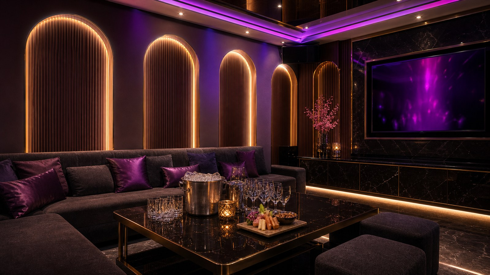

新濠禮服會所適合什麼場合？
新濠禮服會所適合先列入禮服會所名單，再依當日可訂狀況確認。 常見適合情境包括客戶接待或企業宴請、需要體面安排的正式場合、中高預算聚會。禮服店比較適合需要接待感和穩定服務的場合；如果是商務局，預算、酒水和包廂等級最好提前說明。
新濠禮服會所適合先列入禮服會所名單，再依當日可訂狀況確認。 新濠禮服會所屬禮服會所型態，適合商務宴請、朋友聚會與需要正式接待的場合。建議先確認當日店內安排與計費單位。
新濠禮服會所目前以預約確認集合點為主，安排時可先抓在台北市區；出發前再核對入口、樓層與當日包廂，會比只看舊地址更準。
禮服店重點在接待流程、談話品質、包廂質感和整體體面感，適合商務接待或正式聚會。 包廂費約 NT$ 2,000 起、人頭費約 NT$ 500／人、服務費約 NT$ 1,000／包、檯費約 NT$ 2,250／60 分鐘；酒水、指定、加時與刷卡費可能另外計算。安排前先講人數、時間、預算和想要的氣氛，現場會比較好抓。
| 分類 | 禮服店 |
|---|---|
| 區域 | 台北市區，實際集合地點請預約確認 |
| 地址／地點 | 預約時確認集合地點、入口與樓層 |
| 營業時間 | 晚間營業，請預約確認 |
| 包廂費估算 | NT$ 2,000 起 |
| 人頭費估算 | NT$ 500／人 |
| 服務費估算 | NT$ 1,000／包 |
| 檯費估算 | NT$ 2,250／60 分鐘 |
| 基本時間 | 120 分鐘起 |
| 方案備註 | 基本包廂、服務人員、水果或基本飲品依店家方案 |
依公開網路名單與消費資訊整理，實際營業狀態、價格與包廂安排以預約確認為準。
新濠禮服會所適合先列入禮服會所名單，再依當日可訂狀況確認。 常見適合情境包括客戶接待或企業宴請、需要體面安排的正式場合、中高預算聚會。禮服店比較適合需要接待感和穩定服務的場合；如果是商務局，預算、酒水和包廂等級最好提前說明。
新濠禮服會所目前以預約確認集合點為主，安排時可先抓在台北市區；出發前再核對入口、樓層與當日包廂，會比只看舊地址更準。 多人同行時，建議先把集合點、抵達時間和聯絡方式講好，進場會比較順。
和制服店相比，禮服店節奏較穩；和便服店相比，接待感與儀式感更明顯，適合需要顧到面子的安排。 比較新濠禮服會所時，可以一起看台北禮服店推薦、禮服店地點、禮服店收費、林森北禮服店、台北酒店，但真正要決定的是這次場合、人數和預算是否合拍。
預約重點
查新濠禮服會所時，常會一起比較新濠禮服會所、台北禮服店推薦、禮服店地點、禮服店收費、林森北禮服店、台北酒店、台北禮服店。這些詞可以幫你快速確認店型、地點、費用和預約方向，不用只靠店名猜現場感。
搜尋禮服店地點時，地段只是第一步，真正影響體驗的是包廂質感、接待流程和費用拆項。 新濠禮服會所適合先列入禮服會所名單，再依當日可訂狀況確認。 營業資訊目前為晚間營業，請預約確認，實際狀態請以預約回覆為準。
適合重視服務穩定、環境質感和接待禮貌的客人；如果想要非常熱鬧的玩法，可以同步比較制服店。 這間比較常見的安排是客戶接待或企業宴請、需要體面安排的正式場合、中高預算聚會，如果同行需求不同，可以先告訴幹部再調整店型。
包廂費約 NT$ 2,000 起、人頭費約 NT$ 500／人、服務費約 NT$ 1,000／包、檯費約 NT$ 2,250／60 分鐘；酒水、指定、加時與刷卡費可能另外計算。 禮服店收費通常要看包廂、人數、檯費、酒水和指定需求，預算抓法會比單看店名更重要。 預約時把人數、抵達時間、預算上限和包廂需求一起說，報價會更接近實際狀況。
找台北禮服店推薦、禮服店地點、禮服店收費、林森北禮服店、台北酒店時，很多客人最在意的不是名稱，而是地點是否好集合、費用能不能先抓、當天包廂是否符合人數。新濠禮服會所目前以預約確認集合點為主，安排時可先抓在台北市區；出發前再核對入口、樓層與當日包廂，會比只看舊地址更準。
查新濠禮服會所、台北禮服店推薦、禮服店地點、禮服店收費、林森北禮服店、台北酒店、台北禮服店時，可以先把問題整理成三件事：這間店適不適合這次場合、基本消費怎麼算、現場節奏是否符合同行期待。新濠禮服會所適合先列入禮服會所名單，再依當日可訂狀況確認。
安排 新濠禮服會所 前，先把日期、抵達時間、人數、預算上限和想要的氣氛講清楚，才不會只用店名猜現場感。
包廂費約 NT$ 2,000 起、人頭費約 NT$ 500／人、服務費約 NT$ 1,000／包、檯費約 NT$ 2,250／60 分鐘；酒水、指定、加時與刷卡費可能另外計算。 正式金額仍要依預約確認與現場規定為準。
新濠禮服會所適合先列入禮服會所名單，再依當日可訂狀況確認。 以下幾點是安排前最值得先看的地方。
包廂與接待感較正式
適合商務宴請與主管聚會
整體節奏穩定
重視形象與隱私
新濠禮服會所適合先列入禮服會所名單，再依當日店況確認。因為公開資訊較少，預約時更要把人數、預算、時段與接待需求一次講清楚。
Media
照片可以先看包廂質感、桌面配置和燈光層次，再搭配影片感受禮服店接待氛圍。



Related

Focus麗緻酒店屬於中山區禮服店常見名單，適合商務接待、正式聚會與想要穩定品質的客人。費用建議以包廂、人頭、檯費與酒水分開確認。

環球紫藤名店以禮服名店形象與較早時段安排受到關注，適合下午或晚間需要正式接待的客人。安排前可先確認時段與當日可訂狀況。

香閣里拉招待會所偏會所型態，重視包廂質感、接待流程與隱私感。適合商務宴請或想找穩定服務品質的客人。
新濠禮服會所目前整理為禮服店。新濠禮服會所適合先列入禮服會所名單，再依當日可訂狀況確認。 比較適合商務接待、正式聚會與重視包廂質感的安排，如果不確定是否合適，可以先說明人數、預算和聚會目的。
新濠禮服會所目前以預約確認集合點為主，安排時可先抓在台北市區；出發前再核對入口、樓層與當日包廂，會比只看舊地址更準。
包廂費約 NT$ 2,000 起、人頭費約 NT$ 500／人、服務費約 NT$ 1,000／包、檯費約 NT$ 2,250／60 分鐘；酒水、指定、加時與刷卡費可能另外計算。正式金額仍以預約回覆與現場規定為準。
可以，但第一次建議先請幹部說明基本時間、包廂費、人頭費、服務費、檯費、酒水和加時規則。先把界線、預算和想要的氣氛講清楚，安排會更順。
Reservation
提供台北制服店、林森北酒店、台北禮服店、便服店與男模會館預約諮詢。請先提供日期、時間、人數、預算與偏好店型。